臺灣香蕉專業圖鑑
臺北農產運銷公司內部培訓自主學習資料
10 品種內外銷香蕉 + 13 品種食用芭蕉 · 北農 A 類品名代號對照 · 觀賞蕉不收錄
香蕉（Musa spp.）為芭蕉科芭蕉屬大型草本植物，原產於東南亞熱帶地區，是世界上最重要的水果之一，年產量超過 1.5 億公噸，僅次於番茄、西瓜居世界水果第三位，也是臺灣栽培面積最大的果樹。
臺灣香蕉栽培面積約 15,000 公頃，年產約 33 萬公噸，曾經是臺灣最大的外銷農產品，1960–1970 年代年外銷日本最高達 40 萬公噸，為臺灣賺取大量外匯，有「香蕉王國」美譽。今日內銷為主、外銷為輔，產地集中中南部，屏東縣為最大產區。
品種方分為香蕉（AAA 基因組）與芭蕉（AA/AB/ABB 等基因組）兩大類。香蕉以「北蕉」為基礎親本，台蕉系列為主要栽培品種；芭蕉則以蛋蕉、玫瑰蕉、紅皮蕉等特色品種著稱。
收錄範圍：本圖鑑聚焦市場流通的鮮食品種，共 23 種（內外銷香蕉 10、食用芭蕉 13）。園藝觀賞用蕉類與種原編號品系因不屬拍賣交易果品，不予收錄。
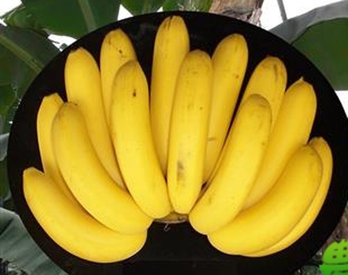
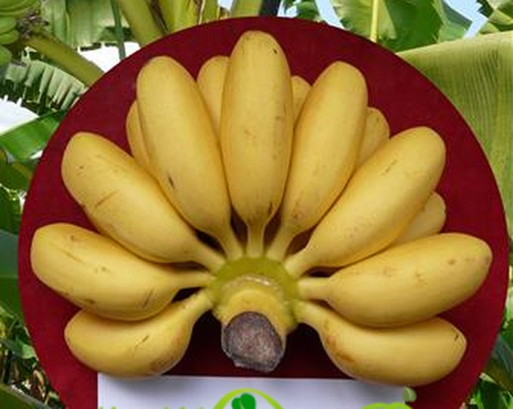
左：北蕉 — 臺灣香蕉的基礎品種，栽培歷史逾 270 年 ｜ 右：蛋蕉 — AA 二倍體芭蕉，皮薄肉滑甜度高（圖：農業部農業知識入口網）
以單一產季年度呈現各品種供應時序，淺色為供應期、深色為盛產期。橫軸由當年度 1 月延伸至翌年 6 月，跨年產期可連續判讀。
臺灣香蕉周年生產，春夏 3–6 月糖度最高、風味最佳且適合內外銷；部分品種有特定集中產期。
| 排名 | 縣市 | 約佔比 | 主要鄉鎮 |
|---|---|---|---|
| 1 | 屏東縣 | 25–30% | 高樹、內埔、萬巒、里港 |
| 2 | 南投縣 | 15–20% | 名間、集集、竹山 |
| 3 | 高雄市 | 12–15% | 旗山、美濃 |
| 4 | 臺南市 | 8–12% | 山上、左鎮 |
| 5 | 嘉義縣 | 8–10% | 中埔、竹崎 |
依農業部農業知識入口網正式分類：
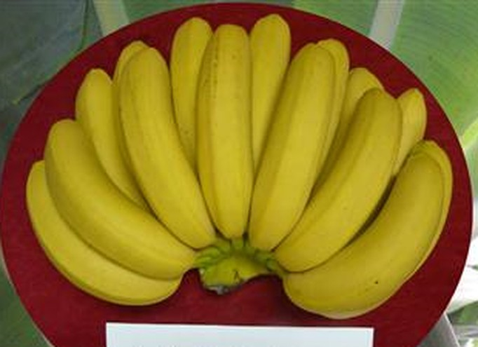
AAA 基因組 · 10 品種
北蕉 · 台蕉1–8號 · 新北蕉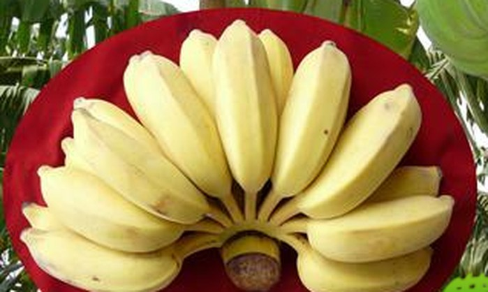
AA/AB/ABB 基因組 · 13 品種
蛋蕉 · 玫瑰蕉 · 紅皮蕉 · 呂宋蕉等以下 23 張成熟果把照片，逐一裁自農業部農業知識入口網各品種官方圖卡（只取果把主體，捨去田間植株與烤入圖面的品種名標題），可直接比對果指形狀、色澤與果把大小。觀賞蕉類不在此列。
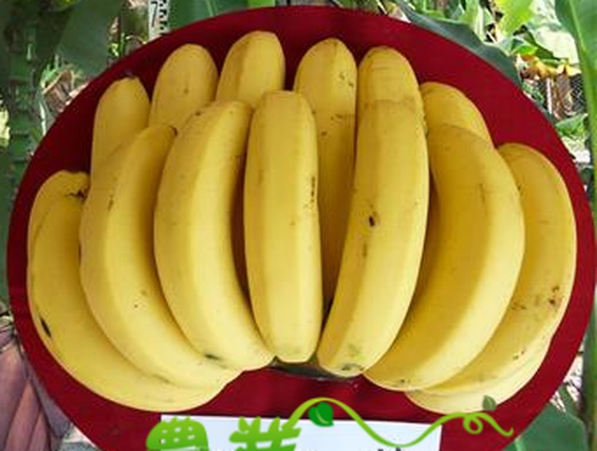
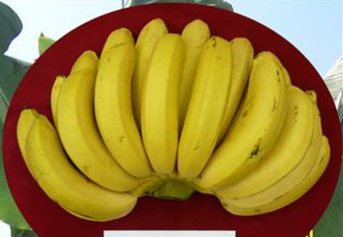
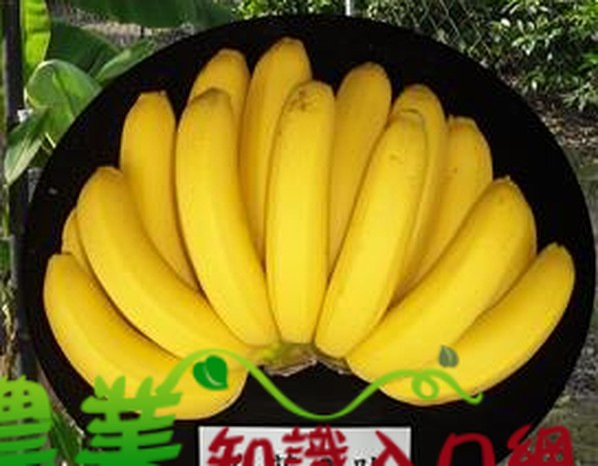
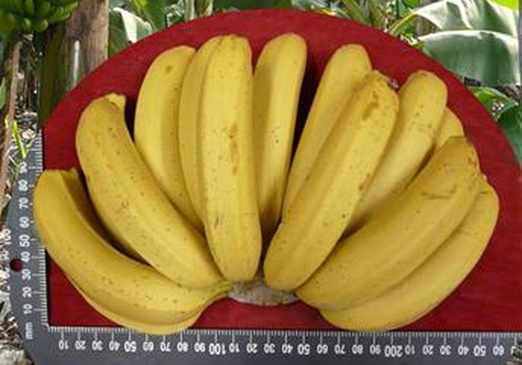
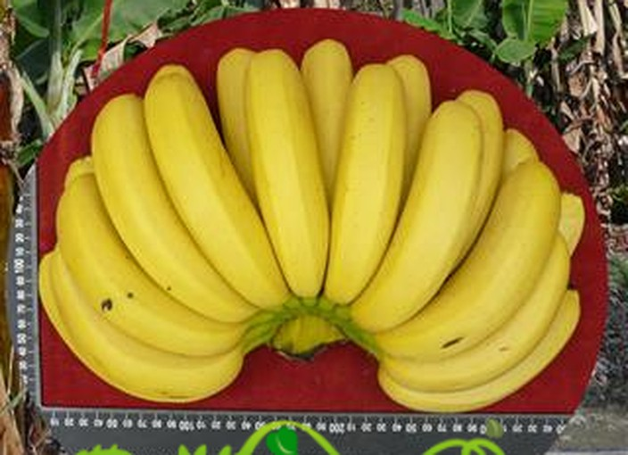
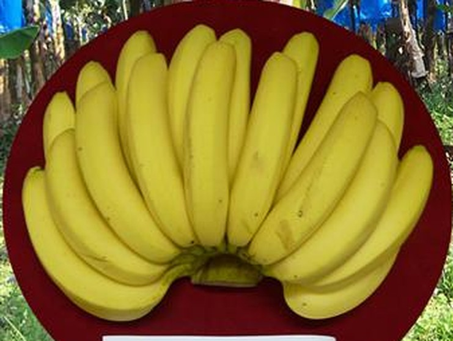
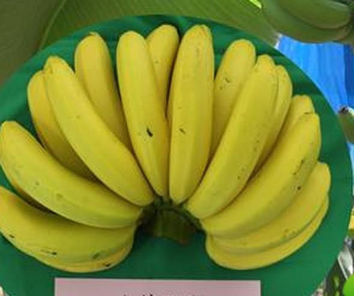

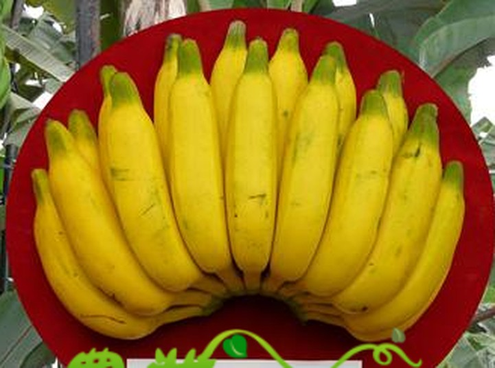
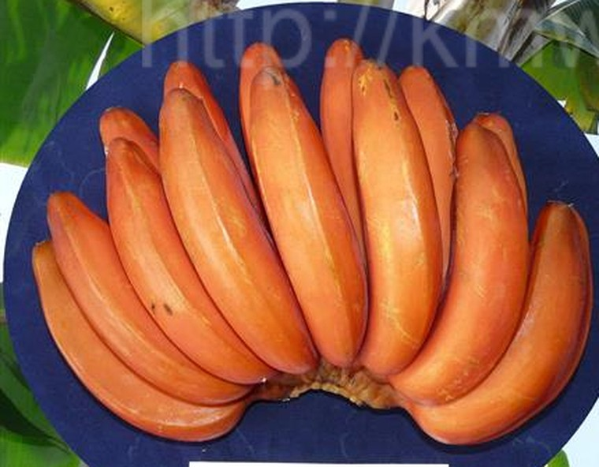
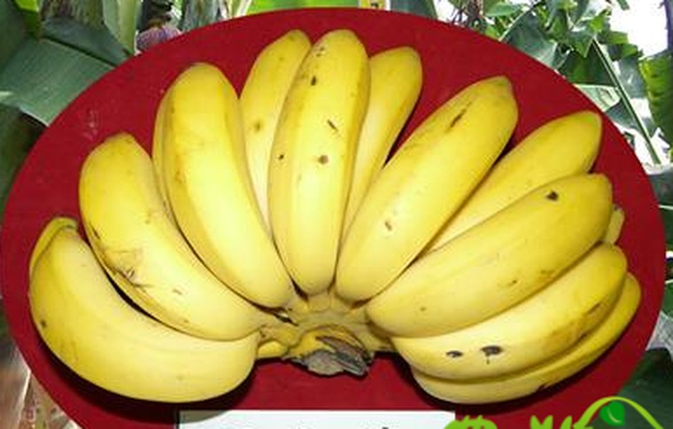
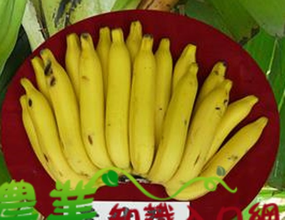
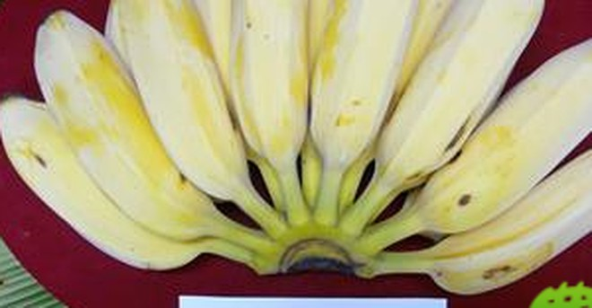
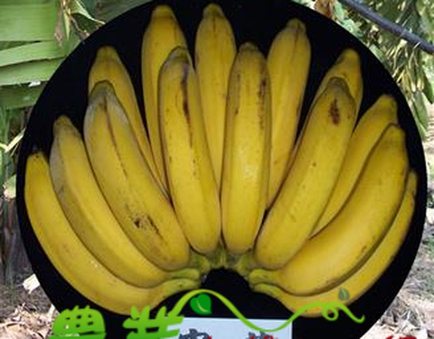
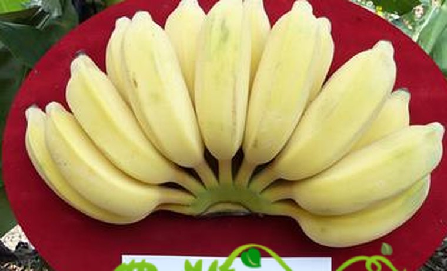
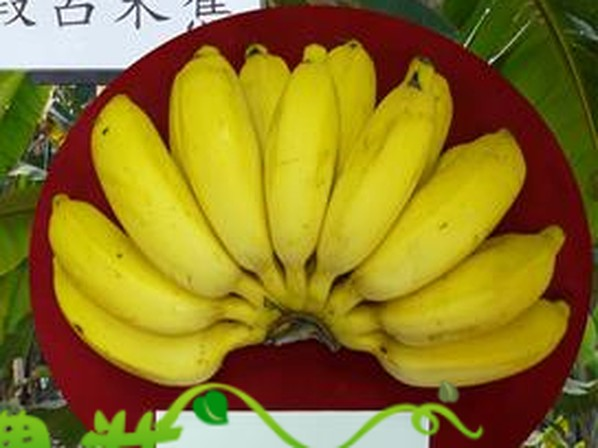
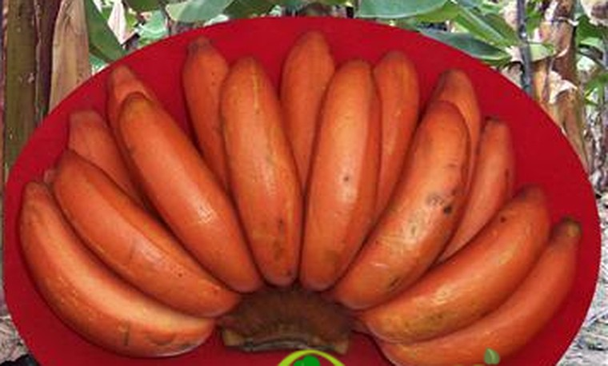
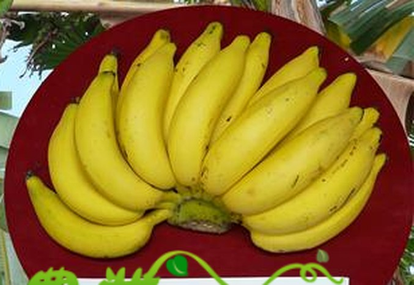
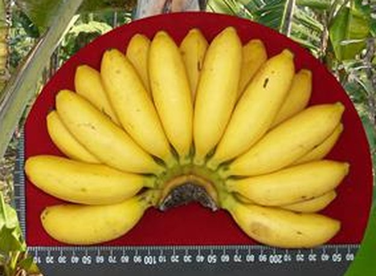
北蕉：清乾隆年間自華南引入，栽培歷史逾 270 年，是臺灣所有香蕉品種的根基（圖：農業部農業知識入口網）
| 項目 | 特徵 |
|---|---|
| 歷史 | 清乾隆年間（1736–1795）自華南引入，至今約 270 年 |
| 植株 | 高大約 270 cm，假莖圓柱形、綠帶褐色；平均吸芽 7–8 枚 |
| 果實 | 果形略呈弓形，果指長 20–25 cm，平均指重 186 g |
| 果肉 | 淡黃色，肉質細緻香甜 |
| 產量 | 每株果重約 25 公斤 |
| 產期 | 3–5 月種植，翌年 2–6 月採收（此時風味最佳、適合外銷）；新植約 12 個月可採收 |
| 抗病 | 對黃葉病第四生理小種不具抗病性，不宜在病園種植 |
| 栽培 | 偶有「青丹」現象發生；颱風季需插立防風支柱；建議黃色內層平滑紙套袋 |
仙人蕉：北蕉的芽條變異品種，果形較北蕉更為弓彎（圖：農業部農業知識入口網）
| 項目 | 特徵 |
|---|---|
| 來源 | 北蕉的芽條變異品種 |
| 果實 | 果形較北蕉更為弓彎，果指稍長 |
| 風味 | 香甜，與北蕉相近 |
| 產期 | 與北蕉相近，周年生產 |
| 定位 | 傳統地方品種，栽培面積較北蕉少 |
| 品種 | 育種目標 | 主要特徵 | 產期 |
|---|---|---|---|
| 台蕉 1 號 | 抗黃葉病 | 北蕉體細胞變異選拔，耐病性較北蕉佳 | 周年 |
| 台蕉 2 號 | 矮化抗風 | 植株較北蕉矮，適合防風栽培 | 周年 |
| 台蕉 3 號 | 抗黃葉病 | 北蕉優良株系選拔，為台蕉 5 號親本 | 周年 |
| 新北蕉（寶島蕉） | 抗黃葉病 | 抗第四生理小種，可於病區種植；外銷主力接班品種 | 周年 |
| 台蕉 5 號（玉山） 中抗 | 抗黃葉病 | 果房圓柱形，低溫催熟轉色均勻金黃；櫥架壽命約 4.5 天；株高 250–280 cm 對黃葉病具中抗性；排水不良或砂質土壤發育較差 |
周年 / 11–12 月 |
| 台蕉 6 號（玉豐） | 豐產抗病 | 高產潛力，適合內外銷 | 周年 |
| 台蕉 7 號（玉泉） | 抗病優質 | 果實品質優良，抗病性提升 | 周年 |
| 台蕉 8 號 | 抗病 | 台灣香蕉研究所自寶島蕉田區選獲之矮化豐產新品系，108 年 12 月命名；株高約 270 cm、種植至採收約 12 個月（較寶島蕉提早 1 個月），單株果重 27 kg 以上，果型近似北蕉，果肉糖度 21–23 °Brix，對黃葉病 TR4 具中度抗性 | 周年 |
蛋蕉：泰國原名 Kluai Khai（意為「蛋」），果指短圓、皮薄肉滑甜度高，臺灣雖少種但市場反應極佳（圖：農業部農業知識入口網）
| 項目 | 特徵 |
|---|---|
| 基因組 | AA（二倍體），泰國及馬來西亞最重要的鮮食蕉品種之一 |
| 果實 | 果指短圓，未熟青綠色、熟後轉淺黃色；果皮極薄 |
| 果肉 | 橙黃色，肉質滑嫩，甜度高，微帶香氣 |
| 產量 | 單株果重約 7–13 公斤，每串約 6–7 果把 |
| 抗病 | 可能抗黃葉病第一生理小種，但不抗第四小種 |
| 市場 | 臺灣種植極少，但市場試銷反應良好；又名貢蕉、Pisang Mas |
玫瑰蕉：原品種名 Cultivar Rose，1995 年自比利時國際香蕉種原轉運中心引進（圖：農業部農業知識入口網）
| 項目 | 特徵 |
|---|---|
| 基因組 | AA（二倍體），1995 年自比利時 ITC 引進，來源不詳（可能為印尼地方品種） |
| 果實 | 果指細長而尖，催熟後呈鮮黃色 |
| 果肉 | 淺黃色，香甜、口感極佳 |
| 產量 | 果房約 5–12 公斤；冬春低產、夏秋高產 |
| 產期 | 生育週期短，約 9–10 個月可採收 |
| 抗病 | 對黃葉病具高度抗性，可在病區種植 |
| 市場 | 具發展為高品質精緻水果的潛力 |
紅皮蕉：因果皮呈討喜的暗紅色而得名，全球廣泛分布但多為庭園式栽培（圖：農業部農業知識入口網）
| 項目 | 特徵 |
|---|---|
| 基因組 | AAA，遍佈全球蕉區，東南亞及中南美洲普遍種植（多為庭院式） |
| 植株 | 高大，假莖呈深紅色；生育期長達 18 個月 |
| 果實 | 果皮暗紅色，果指中型、肥短而直；果肉黃白色 |
| 風味 | 味甜而香，肉質較軟，口感不及一般香蕉 |
| 產量 | 平地約 12–15 公斤；稍高地區產量較高 |
| 市場 | 臺灣少量分布於旗山、埔里、集集、花蓮；又名蘋果蕉、Red Dacca |
| 變異 | 常有體突變發生，假莖及果實變為綠色（青皮蕉）；中部曾發現紅綠各半果房 |
| 品種 | 基因組 | 主要特徵 |
|---|---|---|
| 南華蕉 | ABB | 臺灣最常見的芭蕉品種之一，果指較香蕉短而肥，風味獨特，適合鮮食及烹調 |
| 矮南華蕉 | ABB | 南華蕉的矮化品種，植株較矮、抗風性佳 |
| 金手指 | AA | 果指細小如手指，金黃色澤討喜，甜度高，屬精品級芭蕉 |
| 皇后蕉 | — | 果形小巧精緻，風味細緻，市場少見的高端芭蕉品種 |
| 李林蕉（美人蕉／佛手蕉） | — | 果串形似佛手、果指排列緊密，外觀特殊；果肉細緻可鮮食，屬食用蕉 |
| 矮紅皮蕉 | AAA | 紅皮蕉的矮化品種，植株較矮管理方便，果皮同樣呈暗紅色 |
| 呂宋蕉（日本蕉／南洋蕉） | — | 引自菲律賓呂宋島，果指較長，風味香甜，臺灣中部山區有栽培 |
| 假呂宋蕉（仿仔） | — | 外觀近似呂宋蕉，風味略遜，市場上需注意辨別 |
| 蜜蕉 | — | 甜度高，如蜜般香甜，為近期市場話題芭蕉品種 |
| 粉蕉 | ABB | 果皮成熟時呈淺粉黃色，果肉細軟，風味清甜 |
| 品種 | 基因組 | 果指特徵 | 單株果重 | 產期 | 核心特色 |
|---|---|---|---|---|---|
| 北蕉 | AAA | 弓形 · 20–25 cm | 25 kg | 2–6 月 | 基礎品種 · 270 年歷史 · 外銷主力 |
| 仙人蕉 | AAA | 弓彎 · 較北蕉長 | 20–25 kg | 周年 | 北蕉芽條變異 |
| 台蕉 5 號 | AAA | 圓柱形 · 北蕉特性 | — | 11–12 月 | 中抗黃葉病 · 轉色均勻金黃 |
| 新北蕉 | AAA | 圓柱形 | — | 周年 | 抗 TR4 · 外銷接班品種 |
| 蛋蕉 | AA | 短圓 · 極薄皮 | 7–13 kg | — | 橙黃果肉 · 滑嫩甜高 |
| 玫瑰蕉 | AA | 細長尖 · 鮮黃 | 5–12 kg | 9–10 月 | 高抗黃葉病 · 口感極佳 |
| 紅皮蕉 | AAA | 肥短直 · 暗紅皮 | 12–15 kg | 18 月週期 | 暗紅果皮 · 全球分布 |
| 南華蕉 | ABB | 短肥 | — | 周年 | 最常見芭蕉 · 鮮食烹調兩用 |
| 金手指 | AA | 細小如指 · 金黃 | — | — | 精品級迷你蕉 |
臺北農產運銷公司果菜品名代碼表中，香蕉類屬 A 類。拍賣交易、語音查詢與進貨明細均以下列代號登載，與品種學名是兩套不同系統，儲訓人員需能互換對照。
| 品名代號 | 拍賣品名 | 語音查詢碼 | 大小規格（每把果重） | 紙箱（外徑） | 淨重 |
|---|---|---|---|---|---|
| A1 | 香蕉 北蕉、台蕉系列、新北蕉 | 070101 | 大 L：3 kg 以上 中 M：2–3 kg 小 S：未達 2 kg | 五號箱 60×40×30 cm | 15 kg |
| A2 | 芭蕉 南華蕉、粉蕉、蜜蕉 | 070102 | 大 L：2.5–3.5 kg 中 M：1.5–2.5 kg 小 S：未達 1.5 kg | 55×35×27 cm | 15 kg |
| A3 | 旦蕉 蛋蕉／一口蕉 | 070103 | 2L：900 g 以上 大 L：750–900 g 中 M：500–750 g 小 S：未達 500 g | 56×36×19 cm | 10 kg |
| A4 | 越旦 | 070104 | 大 L：1 kg 以上 中 M：0.8–1 kg 小 S：未達 0.8 kg | 58×36×20 cm | 10 kg |
| A0 | 其他／美人蕉 | 070100 | 2L：1.2 kg 以上 大 L：0.8–1.2 kg 中 M：0.5–0.8 kg 小 S：未達 0.5 kg | 56×37×25 cm | 15 kg |
| 等級 | A1 香蕉 / A2 芭蕉 | A3 旦蕉 / A0 美人蕉 |
|---|---|---|
| 特級 | 成熟適度、果把完整、色澤優良、果面光滑（芭蕉為果粉均勻）、外觀無瑕疵 | 同一品種、成熟適度、串形完整、色澤優良、無病蟲害及其他傷害 |
| 優級 | 成熟尚適度、果把完整、色澤良好、果面尚光滑、外觀輕微瑕疵 | 同一品種、成熟尚適度、串形完整、色澤良好、無嚴重病蟲害及其他傷害 |
| 良級 | 品質次於優級品，但仍具商品價值者 | |
主要參考資料（農業部農業知識入口網 — 香蕉主題館）：
所有品種照片與資料均引用自農業部農業知識入口網香蕉主題館（kmweb.moa.gov.tw），圖片版權歸原機關所有。圖輯中的果把照裁自官方品種圖卡，已捨去田間背景與烤入圖面的品種名標題；北農分級資料引用自臺北農產運銷公司分級包裝規範。觀賞蕉類與種原編號品系不在本圖鑑收錄範圍。